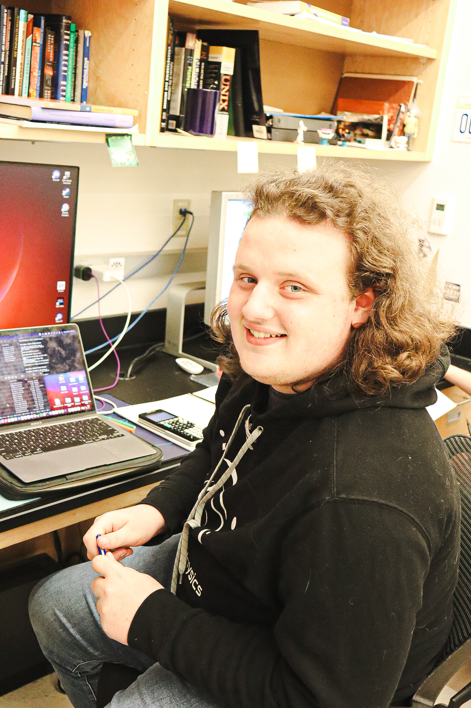
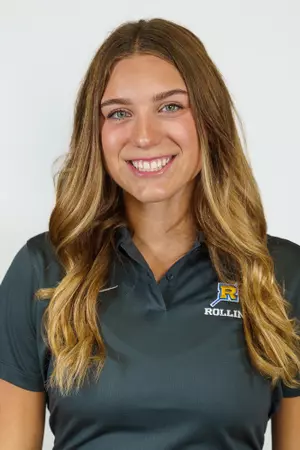

Figuring out what your project should look like can be hard. Listed here are several past projects conducted by students in the CRF program. These videos and descriptions can give you an idea of what to aim for, or possibly show you a project that you'd like to build on with your own research.
Paloma Kluger is a senior completing a double major in English and Sociology. During the summer of 2024, Paloma worked with Dr. Reich of the English department to research how memoirs tackle guilt, grief, responsibility, and blame. They focused on two memoirs, In the Dream House by Carmen Maria Machado and Memorial Drive: A Daughter’s Memoir by Natasha Trethewey, and examined how the memoirs navigated abuse, discrimination, and hardships from the authors’ lives.
Paloma’s research was much more relaxed than she anticipated. The research allowed her to work as a colleague to Dr. Reich, leading to a more collaborative experience. She hopes that more students will come to know about the Collaborative Research Fellowship program, as it is a very rewarding and fun experience.
Shyhiem Walker is a senior who worked with Dr. Guerrier from the biology department. His research consisted of working to mark tetrahymena thropolum, a species of single cell lifeforms, with a genetic marker called mCherry. Specifically he focused on marking a part of the cells to help make testing and identifying cells more efficient and accurate.
Shyhiem’s research began very hands-on, with Dr. Guerrier helping him learn the different procedures. As it went on, Shyhiem gained more independence in the process. His research allowed him to solidify his plans for the future, and helped him find his path of attending graduate school for nanotechnology. Shyhiem suggests that any students interested in research work with professors to get a timeline, as it can help with the challenges of research.
“My current research is focused on exploring the molecular evolution aspect of exoplanetary systems through N-body simulations. My research experience looked different to most, due to mine being strictly computational. The vast majority of my research is sitting in front of code and editing it, then analyzing those simulations. It was a lot of work, but also incredibly rewarding. I plan on attending graduate school, and have had the opportunity to present my research at several conferences. Through these experiences, I have met many people who have given input on both the direction of my current research and future graduate plans.
My advice for any students interested in research is to go talk to a professor who is doing work that you’re interested in. The best thing to do is get on that professor’s radar and make it known that this is what you want to do. Rollins’ research gives you the chance to help direct the research, which is not always the standard for undergraduate research.”

Jake Rollen is a junior who worked in a chemistry lab with Dr. Patrone and fellow researcher Robert Rands. His research focused on finding methods to efficiently synthesize sorbicillinoids, compounds that have the potential to be anti-inflammatory. His research experience functioned like a typical 9-5 laboratory job, working to test and analyze different methods.
Jake’s research experience allowed him to get a deeper connection with Dr. Patrone, resulting in a strong mentor relationship. It also allowed him to gain real-life lab experience, beyond what can be learned from textbooks. Jake suggests that students interested in research reach out to professors they’d like to work with, as professors typically want to share their research with students. Finally, Jake wants students in research to know that research will include failures, as they’re a part of the process.

“I am a rising senior, and last summer I worked with Dr. Brannock from the Marine Biology department. We looked at blue mussel species she had collected in 2008 from Hokkaido, Japan, a region with higher sea surface temperature rates than other areas. My research focused on population genetic dynamics around that region within blue mussel species.
During my research I ran a lot of DNA extractions of the mussel species, enzyme digests, and PCR tests. A lot of my work was collecting data that we could use later. I was surprised during the research by how much I already knew how to do. I thought I was going to be a lot more confused than I was, but when I got into the lab I realized how much I had already learned through my classes and labs.
To any students who are interested in research, look for a faculty advisor early on. We’re a smaller school, so if you’re interested in research, asking those questions and building those connections early is really important. My research has definitely helped me, especially since it’s given me the experience working in a lab that employers are looking for.”
Georgia Bush is a psychology major whose research focused on emotional regulation and how it affects us and our interpersonal relationships. During her research she would meet weekly with Dr. Luchner of the psychology department where they would establish what needed to be completed each week. Georgia was most surprised by how much independence you can get in research, and how that often comes with learning how to adapt to challenges.
Georgia advises students interested in research to reach out to professors with research that’s interesting to them. Talking to professors about their research, and the research you could do with them, can help solidify what your research journey will look like. Georgia’s research has helped her learn that she wants to continue research as she goes to graduate school in the future.
If you did research through Rollins's CRF program in the past and want your project displayed here, please contact us at crfRollins@gmail.com.